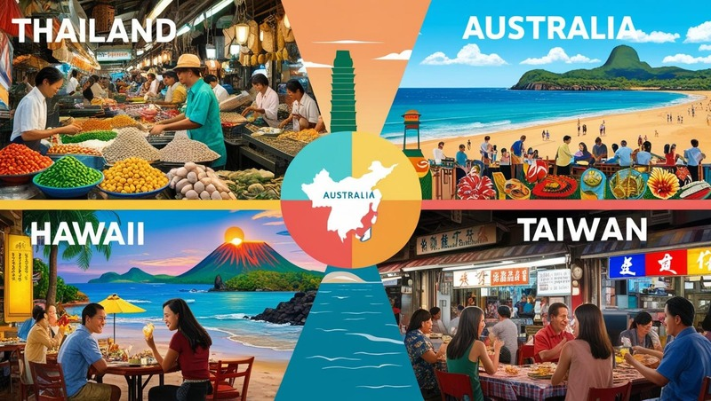

My Favorite Places and Food

Welcome to my page where I share my favorite places and food. First, I want to introduce you to my favorite place, Thailand.
Thailand is a beautiful country in Southeast Asia known for its stunning beaches, rich culture, and delicious cuisine.
Follow by Australia, Hawaii, and Taiwan.Last one is my favorite food, Thai food. Thai food is famous for its bold flavors,
aromatic spices, and fresh ingredients. When you are ready to travel, I hope you will visit these places and try the food.
Let's go!
Image by Canva